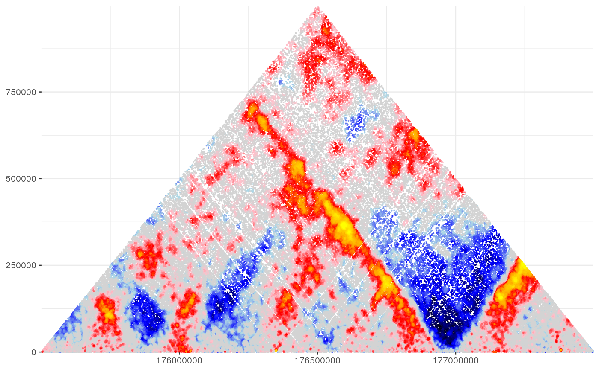

shaman_shuffle_and_score_hic_mat
shaman_shuffle_and_score_hic_mat(obs_track_nms, interval, work_dir, expand = 1e+06, min_dist = 1024, k = 100, dist_resolution = NA, decay_smooth = NA, hic_mcmc_max_resolution = 400, shuffle = 80, grid_small = 5e+05, grid_high = 1e+06, grid_increase = 5e+05, grid_step_iter = 40)
| obs_track_nms | Name of observed 2D genomic tracks for the hic data. |
|---|---|
| interval | 2D interval on which to compute the scores. |
| work_dir | Centralized directory to store temporary files. |
| expand | Size of expansion, points to include outside the matrix for accurate computing of the score. Note that for each observed point, its k-nearest neighbors must be included in the expanded matrix. |
| min_dist | The minimum distance between points. |
| k | The number of neighbor distances used for the score. For higher resolution maps, increase k. For |
| dist_resolution | Number of bins in each log2 distance unit. If NA, value is determined based on observed data (recommended). |
| decay_smooth | Number of bins to use for smoothing the MCMC target function: the decay curve. If NA, value is determined based on observed data (recommended). |
| hic_mcmc_max_resolution | Maximum number of bins for each log2 unit. |
| shuffle | Number of shuffling rounds for each observed point. |
| grid_small | Initial size of maximum distance between contact pairs consdered for switching |
| grid_high | Final size of maximum distance between contact pairs consdered for switching |
| grid_increase | Grid increase size |
| grid_step_iter | Number of iterations in each grid size |
NULL if insufficient observed data, otherwise resturns a list containing 3 elements: 1) points - start1, start2 and score for all observed points. 2) obs - the observed points. 3) exp - the expected points. 4) exp_fn - the name of the expected (shuffled) data file
This function generates an expected 2D hic matrix based on observed hic data, and computes its score.
#Set misha db to test gsetroot(shaman_get_test_track_db()) mat_score = shaman_shuffle_and_score_hic_mat(obs_track_nms="hic_obs", interval=gintervals.2d(2, 175.5e06, 177.5e06, 2, 175.5e06, 177.5e06), expand=5e05, work_dir=tempdir())#>#>#>#>#>#>#>#>#>